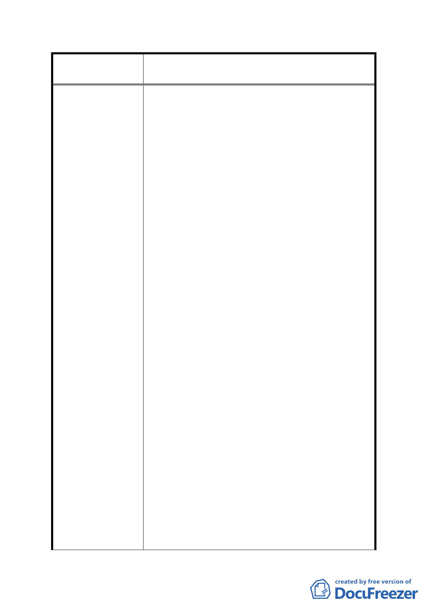

案名
變更臺北市內湖區蘆洲里附近部分工業區為
保護區、住宅區及道路用地主要計畫案
陳情訴求：
1. 住宅區容積率由 200%放寬至 300%。
2. 土地發放比例應依土地公告現值，不應依照貴委
員會同等比例 55%。
3. 退還重劃前繳納之地價稅。
事實:
1. 本人持有潭美段一小段 395 地號及 382 地號，目
前使用分區為工二容積率為 200%，日前都發局擬
變更土地使用分區案為住宅區容積率為 200%。
2. 本人持有土地公告現值約為 63000 元/平方公
尺，但鄰近部分土地之公告現值約為 34000 元/
平方公尺，
3. 本人民國 71 年持有土地，至今已繳納地價稅逾
27 年。
理由:
陳 情 理 由 1. 以目前都發局擬實施重劃開發，依其計劃將擬變
更臺北市內湖區蘆洲里部分工業區改為住宅區
以及科工 A 區，本人致電都發局都市規劃科承辦
人得知前者容積率為 200%，後者為 364%，兩者
容積率差異過大，本人認為該地段環境，住宅區
以及科工 A 區價值無顯著差異，住宅區容積率應
放寬為 300%，實屬合理。
2. 說明:以土地面積 100 坪為例，土地重劃完畢，
所有權人平均發還土地約 55%。
(1)例一:科工 A 區之容積率為 364%，則所有權人分
配 所 得 之 容 積 坪 數 為 200.2 坪
(100*55%*3.64)，預估工業區房屋售價為每坪
30 萬元，則 200.2 坪之房屋價值約計為 6006 萬
元(200.2*30 萬)。
(2)例二：住宅區之容積率為 200%，則所有權人分
配所得之容積坪數為 110 坪(11*55%5*2.00)，
預估該區房屋最高售價為每坪 35 萬元，則 110
- 16 -